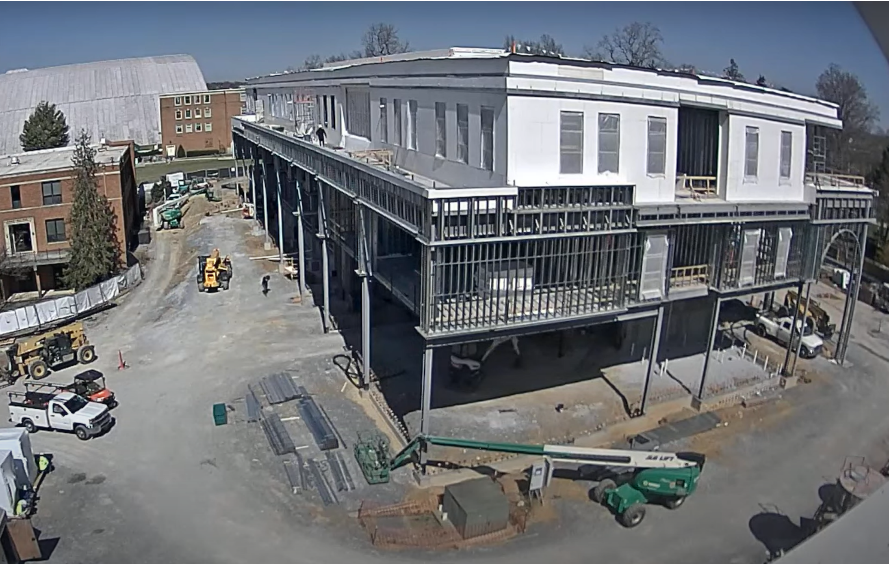
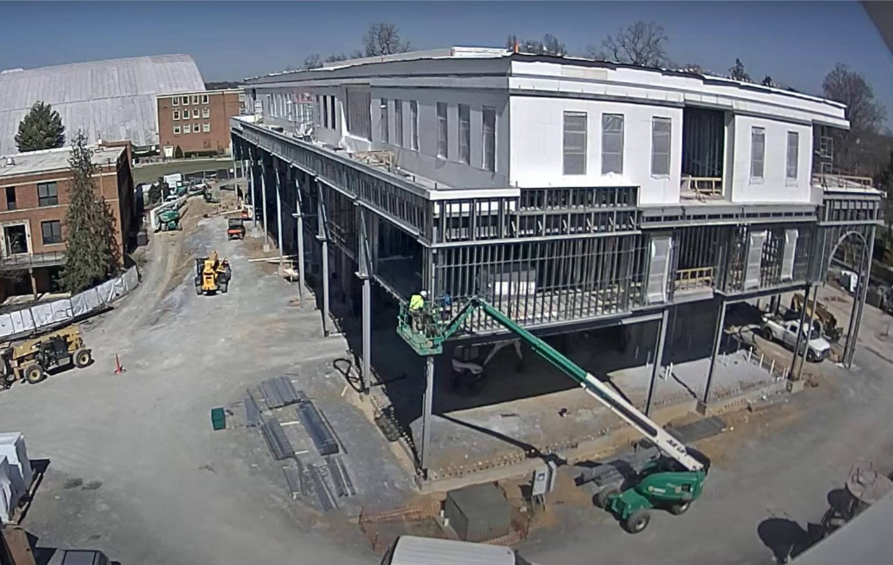
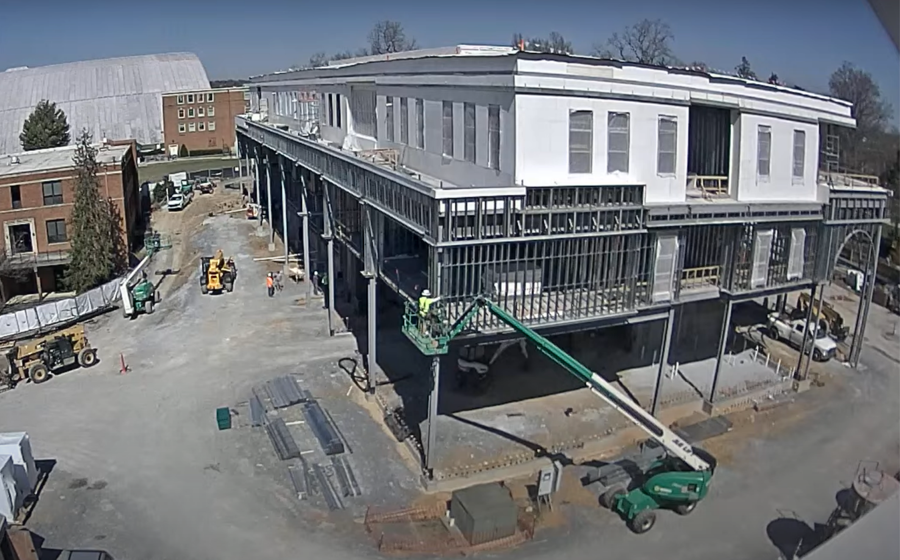
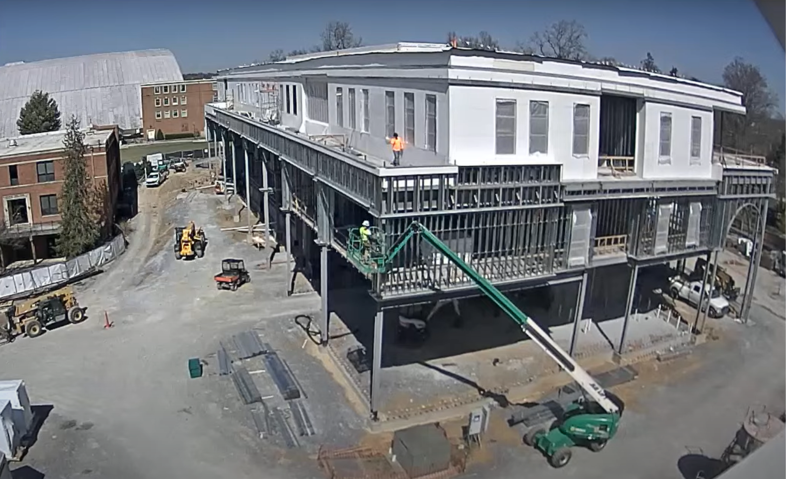

The site was clean, with materials placed near the building and out of the drive path. An orange cone was positioned in the middle but slightly to the left of the road. At 12:30 PM, the live stream showed a relatively empty site, with only five people present. One worker was walking on the ground level, while four others were on the second floor inspecting the flooring. During this time, most of the crew appeared to be on their lunch break, returning to work around 12:45 PM. When activity resumed, an orange utility task vehicle, a white pickup truck, and a green boom lift were actively in use.
The green boom lift brings the worker to the second floor on the outer part of the building, where another person is on the inside. They start discussing and inspecting the corner of the building by measuring, securing, or possibly adjusting the metal. The person on the inside would classify as a contributory worker, he often stops by and helps the person in the basket reach areas on the inner side of the column. After his assistance, he proceeds to other floors and helps other crews with their tasks.
In the back, another boom truck was in use. A worker entered the basket, which was then reversed toward the camera due to the tight spacing between the building on the left and the ongoing construction work. The lift positioned them under the second floor, then drove under the building where they began working on the ceiling of the first floor. This process took approximately five minutes. Meanwhile, a crew of four people was on the third floor, inspecting the windows at the back left of the building. After counting, approximately thirteen people were on-site with around eight workers walking on the ground floor, four on the third and one on the second floor.
The boom lift moved up, positioning the worker in the basket to access the upper section of the framing, where the horizontal and vertical metal components intersect. After completing the inspection of the lower side of the metal, he was raised to work on the outer ceiling of the second floor. On the third floor, a worker in an orange jacket was seen taking a phone call, which lasted 23 minutes. The boom lift was lowered at 1:17 PM, making the total cycle time 29 minutes. It was then repositioned and raised to another section of the second floor, a process that took approximately 11 minutes. The subsequent inspection lasted about 1 hour and 5 minutes.
